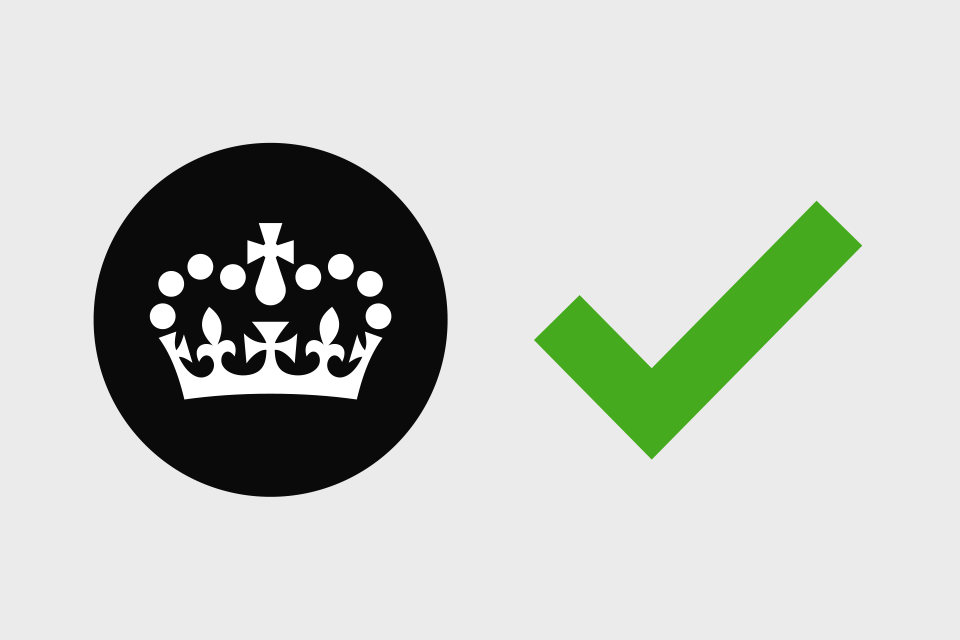

The Service Standard
The Government is committed to ensuring all new or redesigned digital services meet this standard from April 2014. Read the criteria and more
Manuals
The Government is committed to ensuring all new or redesigned digital services meet this standard from April 2014. Read the criteria and more
Learn about the different phases of service design and get guidance for the phase you're in now. Read about the phases
A hub of resources and guidance for bringing new skills into government and building your team. See more on the team